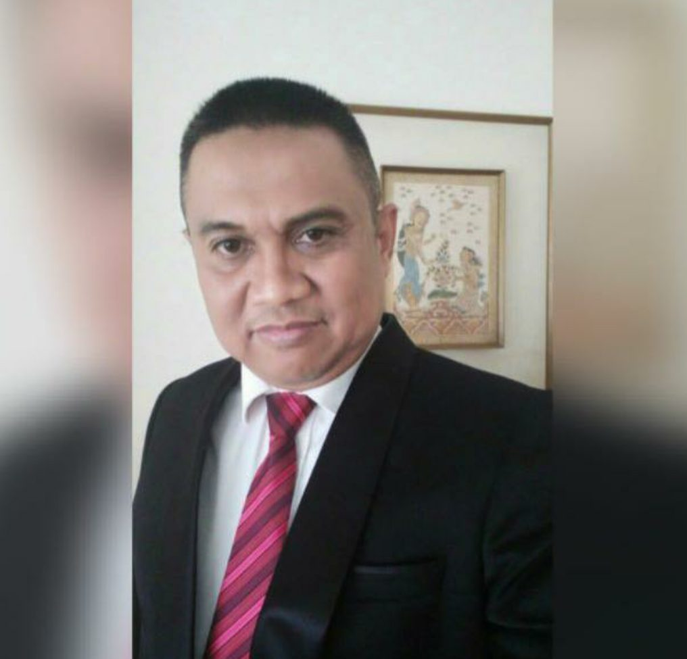
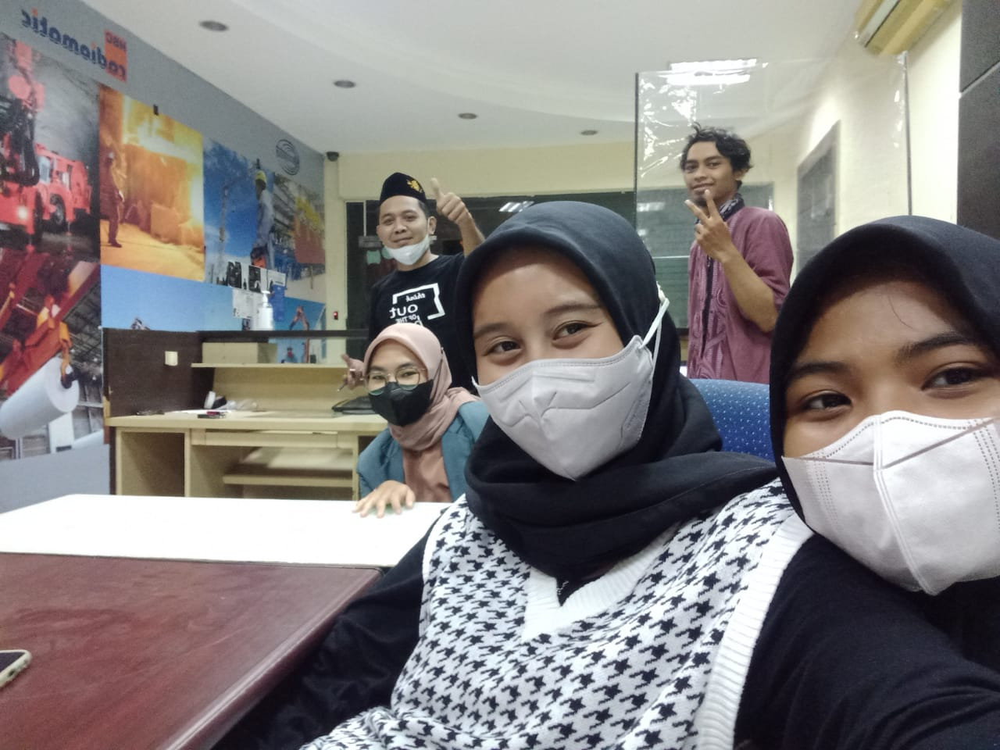

Hal tersebut dilaksanakan pada Rapat Anggota Tahunan (RAT) Inkopsim-NU di Hotel Bidakara Jakarta.
Sebelumnya Drs. H. Tobaroni Hafidz, MM menjabat sebagai Ketua Bidang Inkopsim NU.
Tobaroni merupakan calon terkuat yang disebut sebut akan terpilih menjadi Ketua Umum Inkopsim NU. Hal itu terbukti manakala mayoritas peserta RAT memilih Tobaroni Hafidz secara aklamasi sebagai orang nomor satu di jajaran pengurus induk koperasi organisasi Islam terbesar di Indonesia.
Setelah terpilih sebagai Ketua Umum, Tobaroni langsung menyusun tim formatur dan memutuskan komposisi dan personalia pengurus induk koperasi Syirkah Muawanah PBNU periode 2022-2027, yakni Ketua Dewan Pembina dijabat Ir. H. Benni Sutrisno beserta 4 anggotanya, yaitu KH. As’ad Ali, KH Hafidz Taftazani, HM Al Khaqqoh Istifa, SE., MM dan KH Amirudin Nachrowi, Mpd.
Setelah terpilih sebagai Ketua Umum, Tobaroni langsung menyusun tim formatur dan memutuskan komposisi dan personalia pengurus induk koperasi Syirkah Muawanah PBNU periode 2022-2027.
Selanjutnya komposisi Dewan Pengawas yaitu Ketua Drs. H. Fathan Subchi dan anggota yakni Ahmad Shodiq Noor, S.Ag, Drs. H. Syaiful Amin, Drs. H. Rodia Alfarozie, Dr. H. Amas Tadjuddin dan H. Arifin A Hamid, S.Ag., MM.
Lalu komposisi Dewan Pengurus yakni Ketua Umum Drs. H. Tobaroni Hafidz, MM, Sekretaris Drs. H. Rusbiyanto Asfa dan Bendahara Umum Dr (c) Budi Kasan Besari Adinegoro, S.H., M.H.
Adapun Ketua I dijabat oleh Dr Asep Syarifudin, MM, Ketua II Dr. H. Munief Mahadi Attamimi, Ketua III H. Abdullah Sukron, Ketua IV H. Paryono Nur Abdillah, S.Sos dan Ketua V Ir. H. Gatoet Agoes Wahjoedi .* ( Red )

Jakarta – Kabar Demokrasi
Dalam kesempatan ini kami atas nama Lazisnu, Ustadz Cecep dan Staf Jajaran Mengucapkan Selamat kepada Divisi Hukum Dr (c) Budi Kasan Besari Adinegoro, S.H., M.H yang dimana telah menjabat sebagai Bendahara Umum Induk Koperasi Syirkah Muawanah NU” Minggu 6 Maret 22 .
